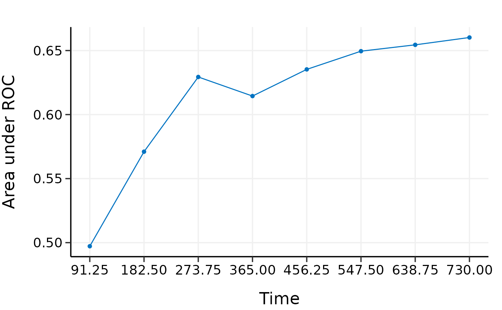

Externally validate high-dimensional Cox models with time-dependent AUC
Source:R/3_4_validate_external.R
validate_external.RdExternally validate high-dimensional Cox models with time-dependent AUC
Usage
validate_external(
object,
x,
time,
event,
x_new,
time_new,
event_new,
tauc.type = c("CD", "SZ", "UNO"),
tauc.time
)Arguments
- object
Model object fitted by
hdnom::fit_*().- x
Matrix of training data used for fitting the model.
- time
Survival time of the training data. Must be of the same length with the number of rows as
x.- event
Status indicator of the training data, normally 0 = alive, 1 = dead. Must be of the same length with the number of rows as
x.- x_new
Matrix of predictors for the external validation data.
- time_new
Survival time of the external validation data. Must be of the same length with the number of rows as
x_new.- event_new
Status indicator of the external validation data, normally 0 = alive, 1 = dead. Must be of the same length with the number of rows as
x_new.- tauc.type
Type of time-dependent AUC. Including
"CD"proposed by Chambless and Diao (2006).,"SZ"proposed by Song and Zhou (2008).,"UNO"proposed by Uno et al. (2007).- tauc.time
Numeric vector. Time points at which to evaluate the time-dependent AUC.
References
Chambless, L. E. and G. Diao (2006). Estimation of time-dependent area under the ROC curve for long-term risk prediction. Statistics in Medicine 25, 3474–3486.
Song, X. and X.-H. Zhou (2008). A semiparametric approach for the covariate specific ROC curve with survival outcome. Statistica Sinica 18, 947–965.
Uno, H., T. Cai, L. Tian, and L. J. Wei (2007). Evaluating prediction rules for t-year survivors with censored regression models. Journal of the American Statistical Association 102, 527–537.
Examples
data(smart)
# Use the first 1000 samples as training data
# (the data used for internal validation)
x <- as.matrix(smart[, -c(1, 2)])[1:1000, ]
time <- smart$TEVENT[1:1000]
event <- smart$EVENT[1:1000]
# Take the next 1000 samples as external validation data
# In practice, usually use data collected in other studies
x_new <- as.matrix(smart[, -c(1, 2)])[1001:2000, ]
time_new <- smart$TEVENT[1001:2000]
event_new <- smart$EVENT[1001:2000]
# Fit Cox model with lasso penalty
fit <- fit_lasso(
x, survival::Surv(time, event),
nfolds = 5, rule = "lambda.min", seed = 11
)
# External validation with time-dependent AUC
val.ext <- validate_external(
fit, x, time, event,
x_new, time_new, event_new,
tauc.type = "UNO",
tauc.time = seq(0.25, 2, 0.25) * 365
)
print(val.ext)
#> High-Dimensional Cox Model External Validation Object
#> Model type: lasso
#> Time-dependent AUC type: UNO
#> Evaluation time points for tAUC: 91.25 182.5 273.75 365 456.25 547.5 638.75 730
summary(val.ext)
#> Time-Dependent AUC Summary at Evaluation Time Points
#> 91.25 182.5 273.75 365 456.25 547.5 638.75
#> AUC 0.4717428 0.5628139 0.6267896 0.6164705 0.6380467 0.6554616 0.6608047
#> 730
#> AUC 0.6667299
plot(val.ext)
#> 91.25 182.5 273.75 365 456.25 547.5 638.75
#> AUC 0.4717428 0.5628139 0.6267896 0.6164705 0.6380467 0.6554616 0.6608047
#> 730
#> AUC 0.6667299

# # Test fused lasso, MCP, and Snet models
# data(smart)
# # Use first 600 samples as training data
# # (the data used for internal validation)
# x <- as.matrix(smart[, -c(1, 2)])[1:600, ]
# time <- smart$TEVENT[1:600]
# event <- smart$EVENT[1:600]
#
# # Take 500 samples as external validation data.
# # In practice, usually use data collected in other studies.
# x_new <- as.matrix(smart[, -c(1, 2)])[1001:1500, ]
# time_new <- smart$TEVENT[1001:1500]
# event_new <- smart$EVENT[1001:1500]
#
# flassofit <- fit_flasso(x, survival::Surv(time, event), nfolds = 5, seed = 11)
# scadfit <- fit_mcp(x, survival::Surv(time, event), nfolds = 5, seed = 11)
# mnetfit <- fit_snet(x, survival::Surv(time, event), nfolds = 5, seed = 11)
#
# val.ext1 <- validate_external(
# flassofit, x, time, event,
# x_new, time_new, event_new,
# tauc.type = "UNO",
# tauc.time = seq(0.25, 2, 0.25) * 365)
#
# val.ext2 <- validate_external(
# scadfit, x, time, event,
# x_new, time_new, event_new,
# tauc.type = "CD",
# tauc.time = seq(0.25, 2, 0.25) * 365)
#
# val.ext3 <- validate_external(
# mnetfit, x, time, event,
# x_new, time_new, event_new,
# tauc.type = "SZ",
# tauc.time = seq(0.25, 2, 0.25) * 365)
#
# print(val.ext1)
# summary(val.ext1)
# plot(val.ext1)
#
# print(val.ext2)
# summary(val.ext2)
# plot(val.ext2)
#
# print(val.ext3)
# summary(val.ext3)
# plot(val.ext3)